Co-op concept
Climbing Together
The game is played alone. This is what a climb with friends could look like one day.
Ascent of the Sun Temple is a single-player game, and the first release is built for one climber: Kaya.
While the temple was being designed, it was also painted with a whole crew climbing it together. Those paintings are too good to bury, and the idea behind them isn't dead either. This page keeps both: what a co-op climb could be one day, and how it would look. Nothing here is promised for launch.

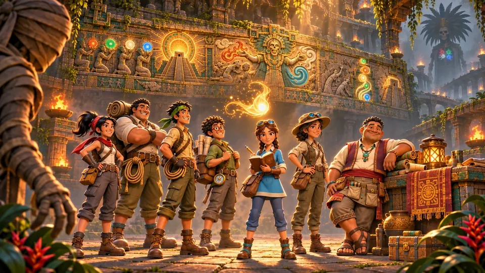
The wall carves everyone
The Spirit Mural already keeps a panel for every climber who fell. With friends, each of them would get their own, next to Kaya's.
Kaya still reads
The goggles, the notebook and the reading stay hers. Friends would carry, guard and climb, and the wall would still talk only to her.
Rooms with a second way through
Every room stays solvable alone. Company would only add speed or another route: one drains the channel while the others wait at the stair.
In and around the temple
The same camp and the same rooms as the solo climb, with company.

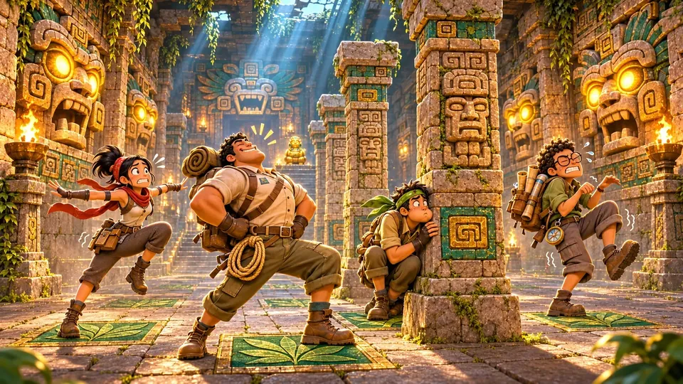

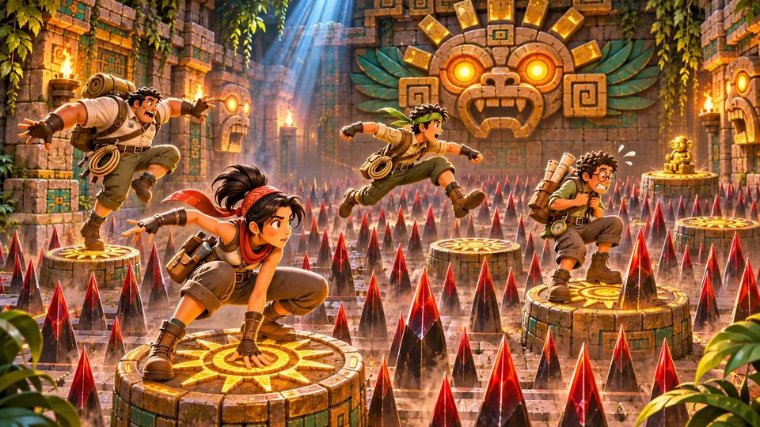

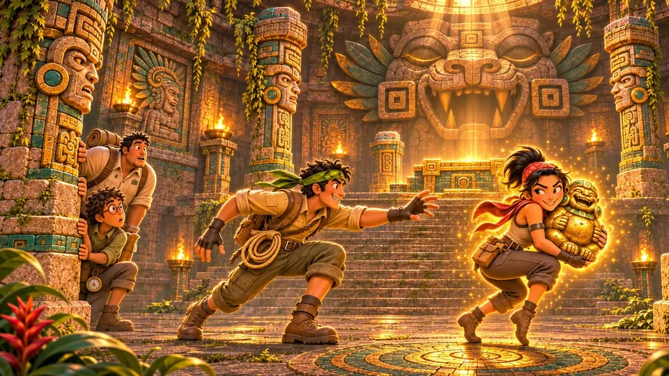

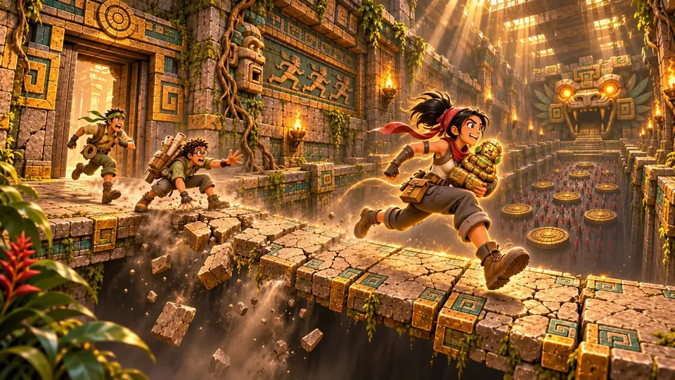


With the cast
K'in, Oxlahun, the guardians and the High Priest, met by more than one climber.

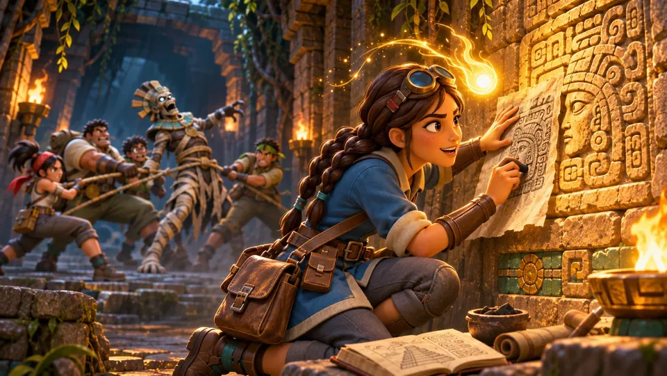

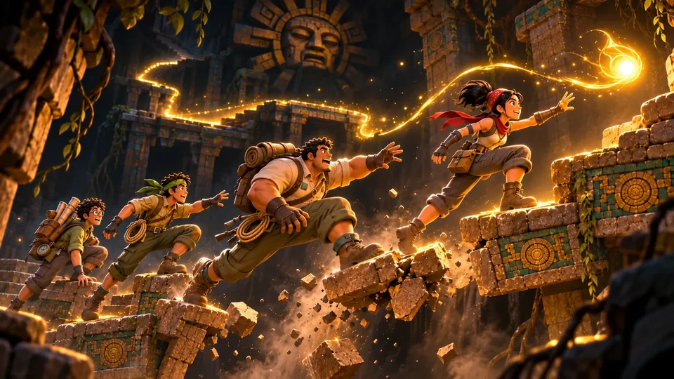

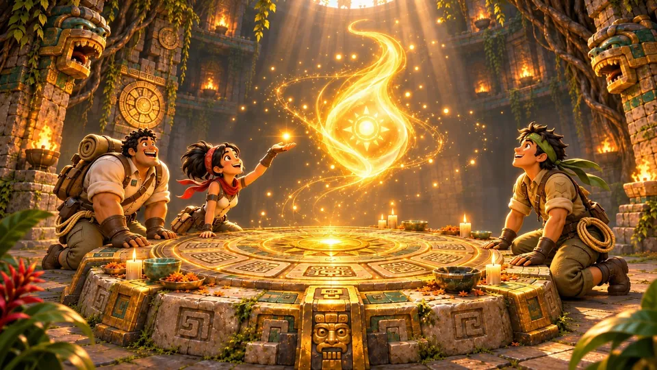

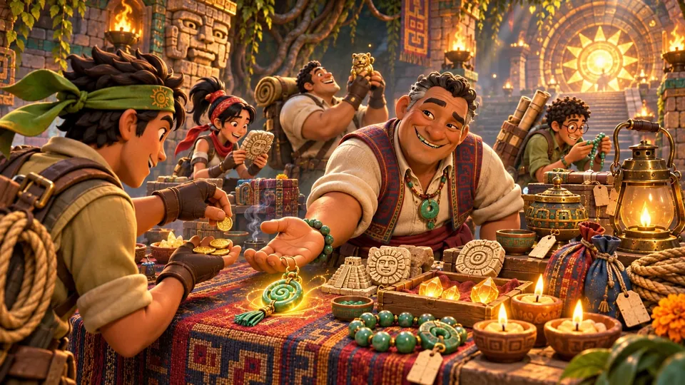

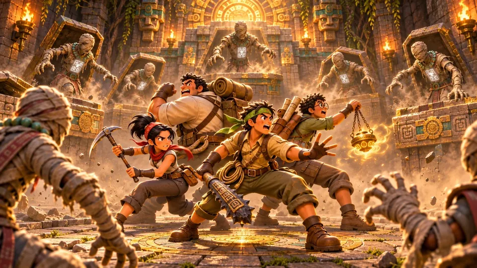

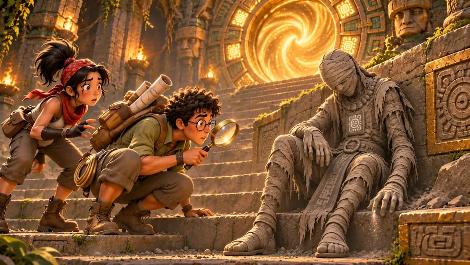

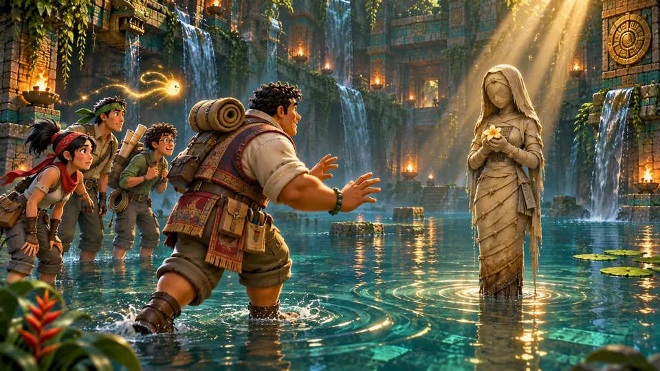

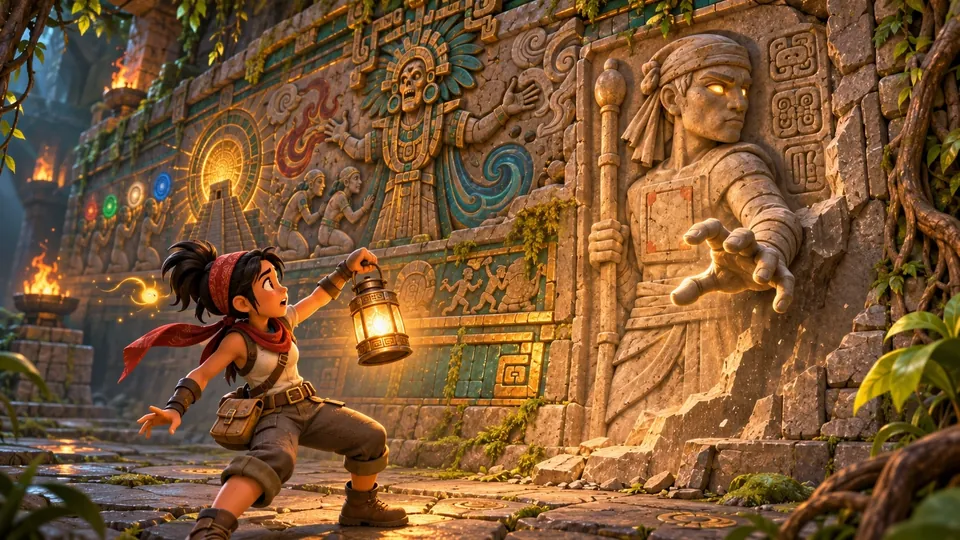

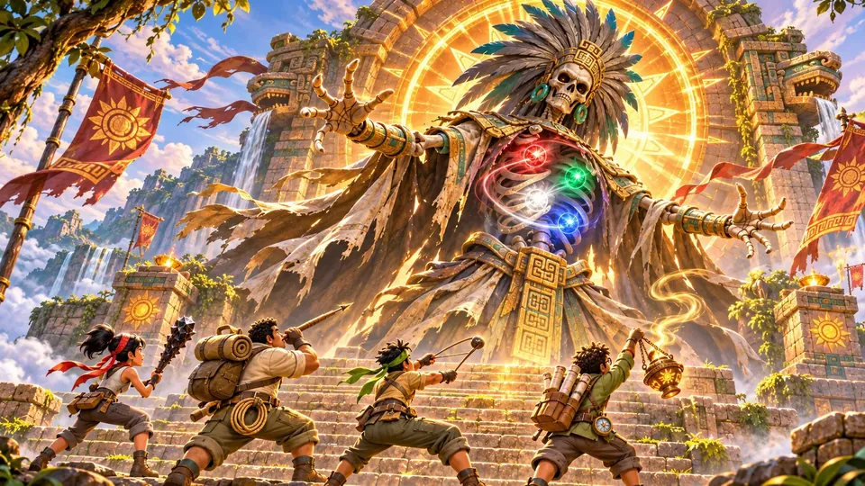
Where the idea started
Before Ascent of the Sun Temple became a single-player game, the temple was planned as five Fortnite islands for up to four players. These were their covers.

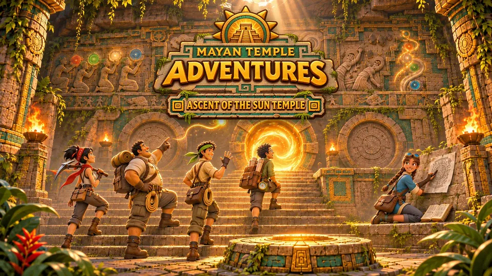

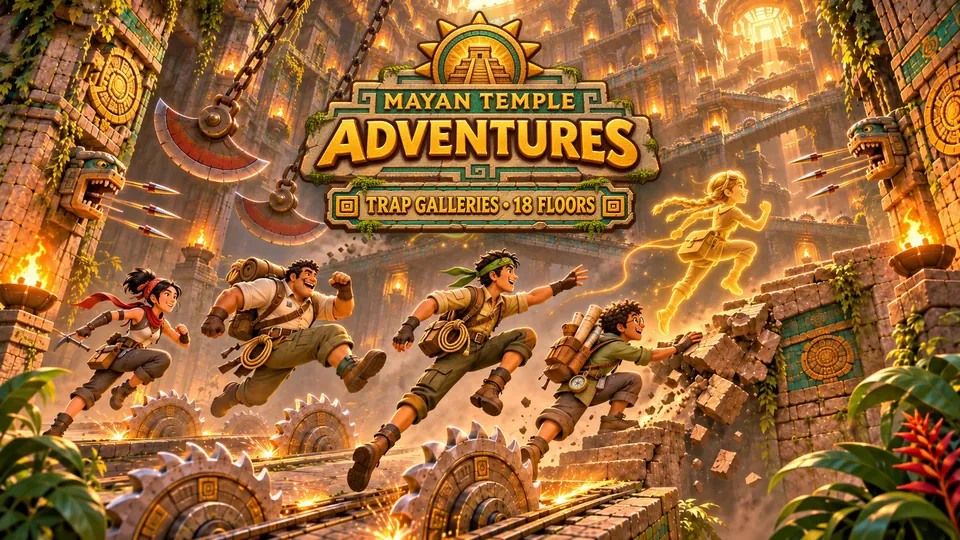

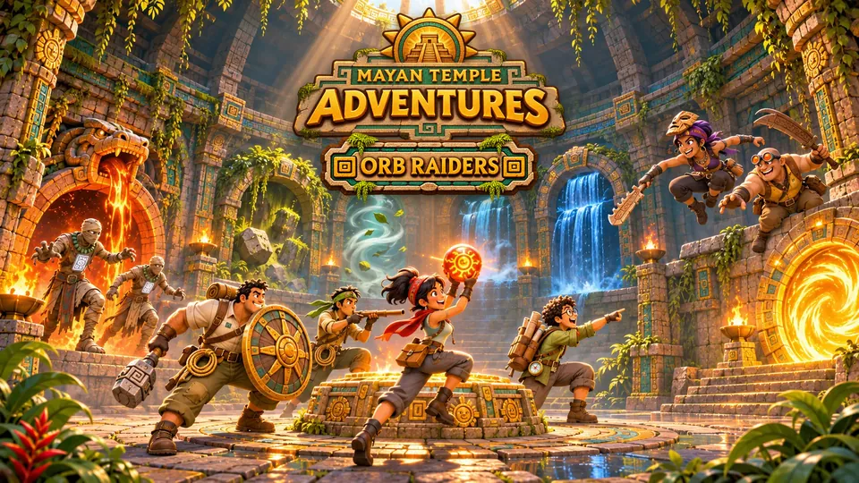

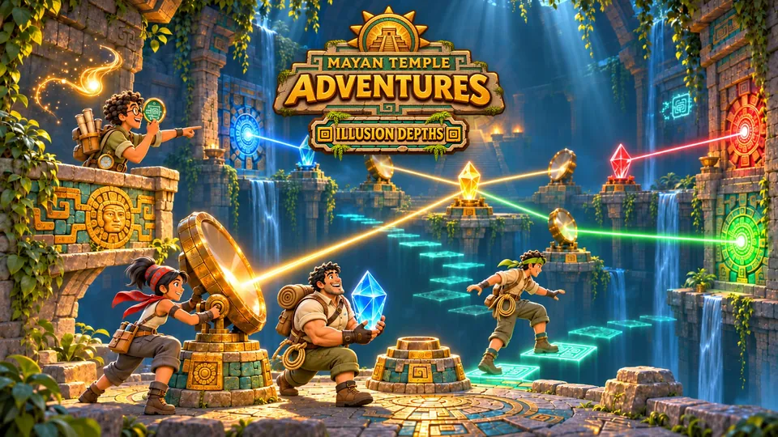

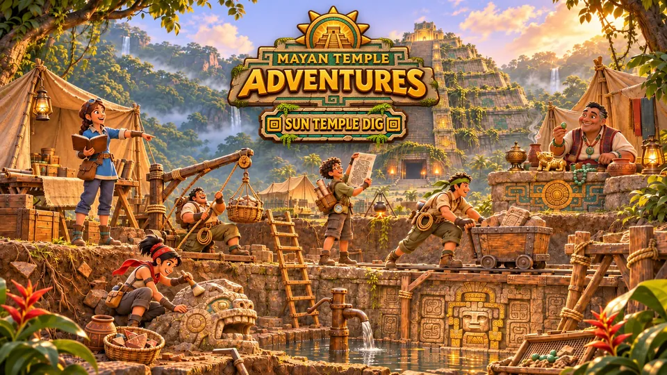